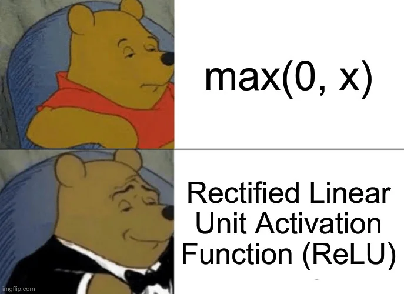
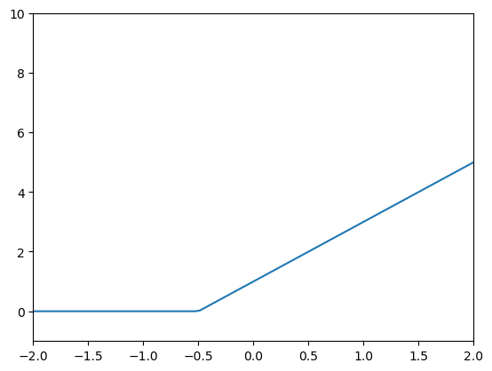
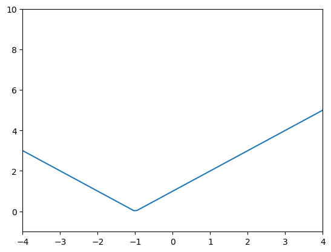
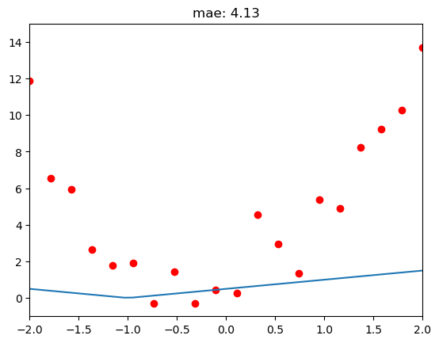
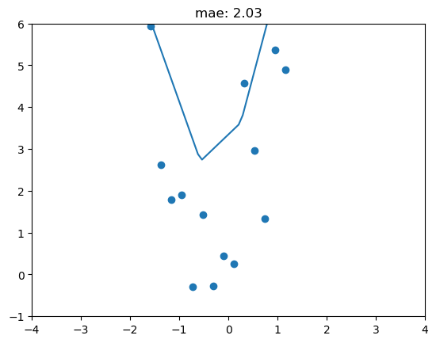

import numpy as np
def sgl_relu_np(m,b,x):
y = m*x+b
relu_y = np.maximum(y,0)
return relu_y
sgl_relu_np(1,1,1)2Tony Phung
March 12, 2024

The key advantages of ReLU include:
Non-linearity: ReLU introduces non-linearity into the model, allowing it to learn complex relationships and patterns in the data. Without non-linear activation functions, a neural network would behave like a linear model, and stacking multiple layers would not provide any additional expressive power.
Computational Efficiency: ReLU is computationally efficient compared to some other activation functions like sigmoid or hyperbolic tangent (tanh). The computation of the ReLU function involves a simple thresholding operation, making it faster to compute during both training and inference.
Sparse Activation: ReLU tends to produce sparse activations (i.e., many neurons output zero), which can lead to more efficient and less redundant representations in the network. This sparsity can be beneficial for both memory usage and computation.
The ReLU activation function is defined as follows:
\[f(x)=max(0,x)\]
numpy.maximumtorch.clip - version 1Note: torch.clip won’t work because it accepts tensors only, and the below function is inputting python native types
import torch
def sgl_relu_pytclip_v1(m,b,x):
y = m*x+b # input to torch needs to be a tensor, ie y=mx+b doesnt work as seen in error:
print(type(y))
return torch.clip(y,0.)
sgl_relu_pytclip_v1(1,1,1)<class 'int'>TypeError: clip() received an invalid combination of arguments - got (int, float), but expected one of:
* (Tensor input, Tensor min, Tensor max, *, Tensor out)
* (Tensor input, Number min, Number max, *, Tensor out)torch.clip - version 2torch.nn.functional.relunn.relu also only takes Tensor input. I’ll use this function going forward.
Goal
relu_plotter_fninputs :
mboutputs:
x rangey rangeimport torch
import torch.nn.functional as nn
from functools import partial
import matplotlib.pyplot as plt
def relu_sgl_fn(m,b,x):
y = m*x+b
return nn.relu(y)
def relu_sgl_plotter_fn(m,b):
xs_sgl_100_tsr = torch.linspace(-2.1,2.1,steps=100)
def relu_sgl_mb_fn(m,b): return partial(relu_sgl_fn,m,b)
relu_sgl_mb_model = relu_sgl_mb_fn(m,b)
ys_sgl_mb_100_tsr = relu_sgl_mb_model(xs_sgl_100_tsr)
plt.xlim((-2,2))
plt.ylim((-1,10))
plt.plot(xs_sgl_100_tsr, ys_sgl_mb_100_tsr)
m=2
b=1
relu_sgl_plotter_fn(m,b)
import torch
import torch.nn.functional as nn
from functools import partial
import matplotlib.pyplot as plt
from ipywidgets import interact
def relu_dbl_fn(m1,b1,m2,b2,x):
y1 = m1*x+b1
y2 = m2*x+b2
return nn.relu(y1) + nn.relu(y2)
def relu_dbl_m1b1m2b2_fn(m1,b1,m2,b2): return partial(relu_dbl_fn,m1,b1,m2,b2)
# @interact(m1=1,b1=1,m2=-1,b2=-1)
def relu_dbl_interactive_plotter_fn(m1,b1,m2,b2):
xs_sgl_100_tsr = torch.linspace(-4.1,4.1,steps=100)
relu_dbl_m1b1m2b2_model = relu_dbl_m1b1m2b2_fn(m1,b1,m2,b2)
ys_dbl_m1b1m2b2_100_tsr = relu_dbl_m1b1m2b2_model(xs_sgl_100_tsr)
plt.xlim((-4,4))
plt.ylim((-1,10))
plt.plot(xs_sgl_100_tsr, ys_dbl_m1b1m2b2_100_tsr)
relu_dbl_interactive_plotter_fn(1,1,-1,-1)
import torch
import torch.nn.functional as nn
from functools import partial
import matplotlib.pyplot as plt
from ipywidgets import interact
def quad_fn(a,b,c,x): return a*x**2 + b*x + c
def quad_abc_fn(a,b,c): return partial(quad_fn,a,b,c)
og_a= 3
og_b= 2
og_c= 1
xs_100_tsr = torch.linspace(-2.1,2.1,steps=100)
quad_og_model = quad_abc_fn(og_a,og_b,og_c)
np.random.seed(42)
def noise(tsr, scale): return np.random.normal(scale=scale,size=tsr.shape)
def add_scale_noise_to_tsr(tsr,scale,additive):
tsr = tsr+tsr*noise(tsr, scale)
tsr = tsr+noise(tsr, additive)
return tsr
xs_20_tsr = torch.linspace(-2,2,steps=20)
ys_20_og_tsr = quad_og_model(xs_20_tsr)
ys_20_noisey_tsr = add_scale_noise_to_tsr(ys_20_og_tsr,0.15,1.5)def calc_mae(actual, preds): return torch.abs(actual-preds).mean()
def relu_2_loss_function(params):
def relu_dbl_m1b1m2b2_fn(m1,b1,m2,b2): return partial(relu_dbl_fn,m1,b1,m2,b2)
relu_dbl_m1b1m2b2_model = relu_dbl_m1b1m2b2_fn(*params)
ys_preds_20_tsr = relu_dbl_m1b1m2b2_model(xs_20_tsr)
return calc_mae(ys_20_noisey_tsr,ys_preds_20_tsr)4.1318 with original input tensor([0.5,0.5,-0.5,-0.5])Original model predictions (blue line) are not great, not very close to our data (red dots)
That makes sense since I arbitrarily chose the parameters of 0.5 and -0.5
m1b1_m2b2_tsr = torch.tensor([0.5,0.5,-0.5,-0.5],requires_grad=True)
relu_2_loss_function(m1b1_m2b2_tsr)tensor(4.1318, dtype=torch.float64, grad_fn=<MeanBackward0>)# @interact(m1=0.5,b1=0.5,m2=-.5,b2=-.5)
def relu_dbl_interactive_plotter_fn(m1,b1,m2,b2):
xs_sgl_100_tsr = torch.linspace(-4.1,4.1,steps=100)
relu_dbl_m1b1m2b2_model = relu_dbl_m1b1m2b2_fn(m1,b1,m2,b2)
ys_dbl_m1b1m2b2_100_tsr = relu_dbl_m1b1m2b2_model(xs_sgl_100_tsr)
plt.xlim((-2,2))
plt.ylim((-1,15))
plt.plot(xs_sgl_100_tsr, ys_dbl_m1b1m2b2_100_tsr)
plt.scatter(xs_20_tsr,ys_20_noisey_tsr, color='r')
# print(ys_20_noisey_tsr)
ys_dbl_preds_20_tsr = relu_dbl_m1b1m2b2_model(xs_20_tsr)
mae = calc_mae(ys_20_noisey_tsr, ys_dbl_preds_20_tsr)
plt.title(label=f"mae: {mae:.2f}")
relu_dbl_interactive_plotter_fn(0.5,0.5,-0.5,-0.5)
1.96 Loss with Gradient Descent after 40 epochsm1b1_m2b2_tsr = torch.tensor([0.5,0.5,-0.5,-0.5],requires_grad=True)
for i in range(40):
loss = relu_2_loss_function(m1b1_m2b2_tsr)
loss.backward()
with torch.no_grad():
m1b1_m2b2_tsr -= m1b1_m2b2_tsr.grad*0.01
print(f"loss_{i+1}: {loss:.2f} - [{m1b1_m2b2_tsr}]")loss_1: 4.13 - [tensor([ 0.5049, 0.5045, -0.5039, -0.4975], requires_grad=True)]
loss_2: 4.13 - [tensor([ 0.5147, 0.5135, -0.5118, -0.4925], requires_grad=True)]
loss_3: 4.11 - [tensor([ 0.5295, 0.5260, -0.5237, -0.4850], requires_grad=True)]
loss_4: 4.09 - [tensor([ 0.5493, 0.5420, -0.5399, -0.4745], requires_grad=True)]
loss_5: 4.07 - [tensor([ 0.5741, 0.5615, -0.5606, -0.4610], requires_grad=True)]
loss_6: 4.04 - [tensor([ 0.6038, 0.5845, -0.5857, -0.4445], requires_grad=True)]
loss_7: 4.00 - [tensor([ 0.6386, 0.6110, -0.6153, -0.4250], requires_grad=True)]
loss_8: 3.95 - [tensor([ 0.6784, 0.6410, -0.6488, -0.4030], requires_grad=True)]
loss_9: 3.90 - [tensor([ 0.7237, 0.6740, -0.6865, -0.3785], requires_grad=True)]
loss_10: 3.85 - [tensor([ 0.7744, 0.7100, -0.7282, -0.3515], requires_grad=True)]
loss_11: 3.78 - [tensor([ 0.8306, 0.7490, -0.7742, -0.3215], requires_grad=True)]
loss_12: 3.71 - [tensor([ 0.8916, 0.7900, -0.8245, -0.2885], requires_grad=True)]
loss_13: 3.65 - [tensor([ 0.9573, 0.8330, -0.8791, -0.2525], requires_grad=True)]
loss_14: 3.57 - [tensor([ 1.0277, 0.8780, -0.9379, -0.2140], requires_grad=True)]
loss_15: 3.50 - [tensor([ 1.1028, 0.9250, -1.0008, -0.1730], requires_grad=True)]
loss_16: 3.41 - [tensor([ 1.1827, 0.9740, -1.0679, -0.1295], requires_grad=True)]
loss_17: 3.33 - [tensor([ 1.2674, 1.0250, -1.1392, -0.0835], requires_grad=True)]
loss_18: 3.24 - [tensor([ 1.3567, 1.0780, -1.2146, -0.0355], requires_grad=True)]
loss_19: 3.15 - [tensor([ 1.4508, 1.1330, -1.2941, 0.0145], requires_grad=True)]
loss_20: 3.05 - [tensor([ 1.5497, 1.1900, -1.3776, 0.0665], requires_grad=True)]
loss_21: 2.94 - [tensor([ 1.6533, 1.2490, -1.4653, 0.1205], requires_grad=True)]
loss_22: 2.84 - [tensor([ 1.7616, 1.3100, -1.5559, 0.1755], requires_grad=True)]
loss_23: 2.74 - [tensor([ 1.8746, 1.3730, -1.6496, 0.2310], requires_grad=True)]
loss_24: 2.65 - [tensor([ 1.9926, 1.4375, -1.7457, 0.2860], requires_grad=True)]
loss_25: 2.57 - [tensor([ 2.1154, 1.5035, -1.8419, 0.3385], requires_grad=True)]
loss_26: 2.51 - [tensor([ 2.2432, 1.5710, -1.9384, 0.3885], requires_grad=True)]
loss_27: 2.45 - [tensor([ 2.3758, 1.6400, -2.0349, 0.4360], requires_grad=True)]
loss_28: 2.39 - [tensor([ 2.5133, 1.7105, -2.1317, 0.4810], requires_grad=True)]
loss_29: 2.33 - [tensor([ 2.6552, 1.7815, -2.2286, 0.5235], requires_grad=True)]
loss_30: 2.27 - [tensor([ 2.8015, 1.8530, -2.3256, 0.5635], requires_grad=True)]
loss_31: 2.23 - [tensor([ 2.9509, 1.9240, -2.4228, 0.6010], requires_grad=True)]
loss_32: 2.19 - [tensor([ 3.1036, 1.9945, -2.5202, 0.6360], requires_grad=True)]
loss_33: 2.16 - [tensor([ 3.2595, 2.0645, -2.6177, 0.6685], requires_grad=True)]
loss_34: 2.12 - [tensor([ 3.4186, 2.1340, -2.7154, 0.6985], requires_grad=True)]
loss_35: 2.07 - [tensor([ 3.5809, 2.2030, -2.8133, 0.7260], requires_grad=True)]
loss_36: 2.05 - [tensor([ 3.7455, 2.2705, -2.9113, 0.7510], requires_grad=True)]
loss_37: 2.03 - [tensor([ 3.9124, 2.3365, -3.0094, 0.7735], requires_grad=True)]
loss_38: 2.01 - [tensor([ 4.0815, 2.4010, -3.1077, 0.7935], requires_grad=True)]
loss_39: 1.98 - [tensor([ 4.2528, 2.4640, -3.2062, 0.8110], requires_grad=True)]
loss_40: 1.96 - [tensor([ 4.4251, 2.5245, -3.3031, 0.8250], requires_grad=True)]New Parameters has created a Double ReLU predictions shaped closer to the Noisey Data as seen below!
def relu_dbl_interactive_plotter_fn(m1,b1,m2,b2):
xs_sgl_100_tsr = torch.linspace(-4.1,4.1,steps=100)
relu_dbl_m1b1m2b2_model = relu_dbl_m1b1m2b2_fn(m1,b1,m2,b2)
ys_dbl_m1b1m2b2_100_tsr = relu_dbl_m1b1m2b2_model(xs_sgl_100_tsr)
plt.xlim((-2,2))
plt.ylim((-1,15))
plt.plot(xs_sgl_100_tsr, ys_dbl_m1b1m2b2_100_tsr)
plt.scatter(xs_20_tsr,ys_20_noisey_tsr, color='r')
# print(ys_20_noisey_tsr)
ys_dbl_preds_20_tsr = relu_dbl_m1b1m2b2_model(xs_20_tsr)
mae = calc_mae(ys_20_noisey_tsr, ys_dbl_preds_20_tsr)
plt.title(label=f"mae: {mae:.2f}")
relu_dbl_interactive_plotter_fn(m1=4.4251, b1=2.5245, m2=-3.3031, b2=0.8250)
I managed to apply gradient descent to a double relu and reduce errror by 50%, not bad!
In a future post, I’ll fit more ReLUs to see how close we can get to our data.